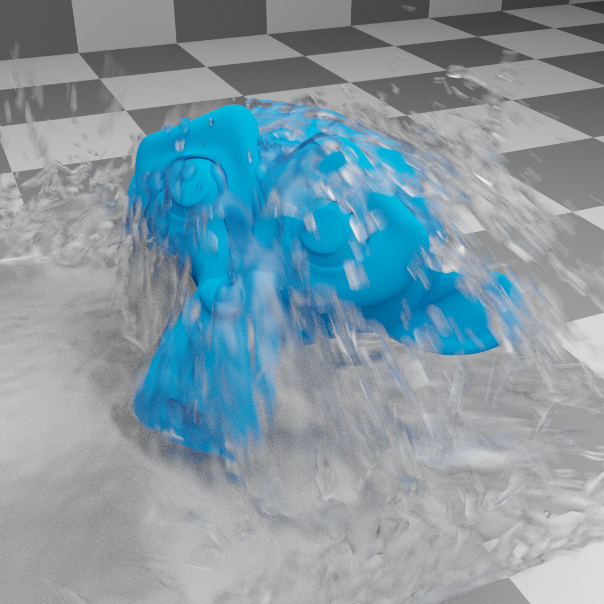
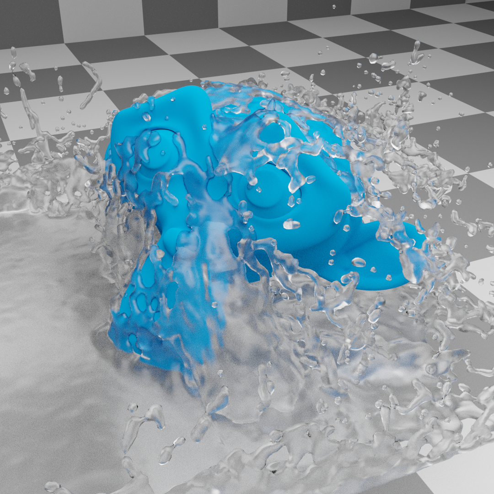
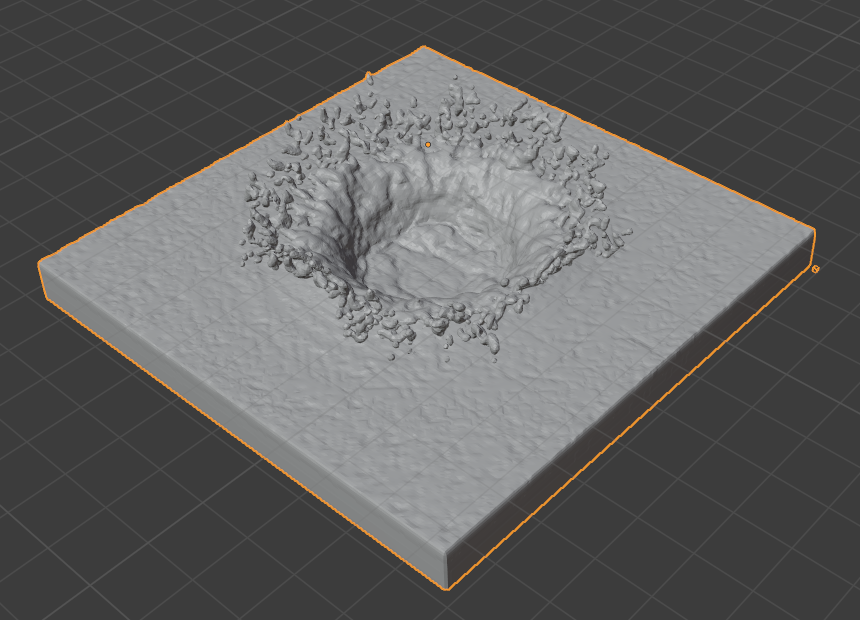
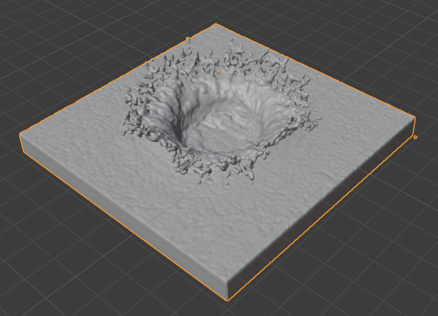

Mesh¶
The liquid mesh is, besides the liquid particles, another way to visualize the liquid simulation. It is generated directly from the liquid particles and often uses a higher resolution than the base Resolution Divisions.
Besides enabling parts of the interface, checking Mesh lets the cache know which simulation data to read. If, for example, Mesh is enabled but there is no mesh simulation data to read it will show the original domain. The checkbox does not reset the cache and can be used to switch the view between the original domain and the baked liquid mesh.
It is important to keep in mind that the shape of the mesh depends on a combination of all these parameters. E.g. changing the Particle Radius will lead to a different interpretation of the concavity values.
- Upres Factor
Factor by which to enhance the resolution of the mesh. The scaling factor is coupled to the Resolution Divisions (i.e. the mesh is this times bigger than the base simulation).
- Particle Radius
The radius of one liquid particle in grid cells units. This value describes how much area is covered by a particle and thus determines how much area around it can be considered as liquid. A greater radius will let particles cover more area. This will result in meshes covering more volume around liquid particles.
This property refers to the same Particle Radius described in the liquid domain settings. Yet for the mesh, it is useful to interpret the particle radius on its own. For one, the mesh can have a resolution different from the base resolution through the Upres Factor. For another, it is often desirable to be able to control the mesh size around a single liquid particle.
- Use Speed Vectors
If this checkbox is enabled, speed vectors (mesh vertex velocities) are generated and stored on drive. They can be used to compute image-based motion blur with the compositing nodes.
Comparison of a liquid splash with and without motion blur (rendered with Cycles).¶ Motion blur enabled.¶
Motion blur disabled.¶
- Mesh Generator
The mesh generator method determines the accuracy of the mesh. The Final option produces a higher quality mesh and provides more configuration option than the Preview option which in turn is faster but not as smooth.
- Smoothing Positive
Positive mesh smoothing iterations. Higher values will make the mesh outline increasingly smooth. Yet higher values can prevent small details (e.g. smaller liquid drops) from getting meshed.
- Smoothing Negative
Negative mesh smoothing iterations. Higher values will make the mesh outline sharper. High values will preserve details, however, the mesh outline will become more ragged (e.g. a single mesh particle will become less rounded and have more flat sides).

Comparison of a liquid drop hitting a surface (viewed from top) with varying smoothing values. Left: 1, 1 (Smoothing Positive, Smoothing Negative). Middle: 10, 1. Right: 1, 10. Note the slightly sharper corners in the right splash (compared to the left one).¶
- Concavity Upper
Upper mesh concavity bound. High values tend to smoothen and fill out concave regions.
- Concavity Lower
Lower mesh concavity bound. High values tend to smoothen and fill out concave regions.
Using a lower concavity which is greater the upper concavity can result in distorted, non-manifold meshes. Unless the artist sees value in this kind of mesh, such concavity value combinations should be avoided.
Crown splash with varying upper and lower concavity settings. Note that setting the concavity values to the same value produces a very granular mesh.¶ 
Upper: 1.0, Lower: 0.0.¶

Upper: 1.0, Lower: 0.5.¶

Upper: 1.0, Lower: 1.0.¶

Upper: 1.5, Lower: 0.0.¶

Upper: 1.5, Lower: 0.5.¶
Upper: 1.5, Lower: 1.0.¶
Upper: 2.0, Lower: 0.0.¶
Upper: 2.0, Lower: 0.5.¶

Upper: 2.0, Lower: 1.0.¶
- Bake Mesh, Free Mesh
This option is only available when using the Modular cache type.
The progress will be displayed in the status bar. Pressing Esc will abort the simulation.
Once the simulation has been baked, the cache can be deleted by pressing Free Mesh. It is possible to pause or resume a Bake Mesh process.